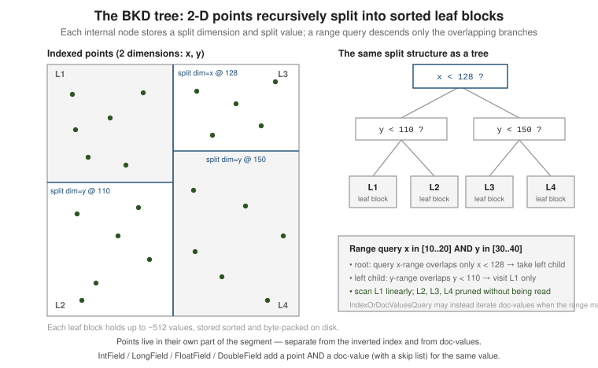

Points & BKD range search
|
This content was generated with the assistance of AI and should be verified against the official documentation before being relied on in production. |
Numeric, date, and multi-dimensional range search in Lucene is served by a points index: a
block KD-tree (BKD tree) that stores each field’s values in sorted, packed leaf blocks and answers
range and set queries by visiting only the blocks that overlap the query. Points are a separate part
of the segment from the inverted index and doc-values, written and queried through the *Point
field and query classes below.
The examples on this page run on the book catalogue used throughout this section: ten books, each with
a publication year, a price and a publication date. Every output block below was produced by
running the code against Lucene 10.4.0 on JDK 21.
The BKD-tree points index
A point field contributes one or more fixed-width byte vectors per document (one dimension for a
plain number, several for a geo point or a bounding-box corner). At flush the values are sorted and
split recursively into leaf blocks of up to 512 values (the default maxPointsInLeafNode); each
internal node records the split dimension and split value so a range query can prune whole subtrees.
Lookups are O(log n) to reach the first overlapping leaf, then a linear scan of the matching
leaves — efficient for both high-selectivity ranges (few leaves) and full scans.

The *Point classes are in the org.apache.lucene.document package; see the
IntPoint
Javadoc (the class Javadoc documents the BKD encoding and the shared query factories that every
sibling *Point type mirrors). Pre-6.x indexes used NumericRangeQuery over trie-encoded
IntField/LongField terms in the inverted index; that approach and its precisionStep tuning were
removed when points replaced it — do not use it on a modern index.
How a range query walks the tree
A points query never looks at individual values until the very end. The reader asks the BKD tree to
intersect a visitor, and at every node the visitor answers one question about the node’s bounding
box: is it entirely outside the query, entirely inside, or does it cross the boundary?
This is observable. The program below indexes one million random ints into a single segment and implements the visitor by hand, counting how many cell tests it performs, how many documents it accepts without looking at their values, and how many it has to check individually:
// https://lucene.apache.org/core/10_0_0/core/org/apache/lucene/index/PointValues.html
import org.apache.lucene.document.*;
import org.apache.lucene.index.*;
import java.util.Arrays;
PointValues pv = reader.leaves().get(0).reader().getPointValues("n");
byte[] lo = new byte[4], hi = new byte[4];
IntPoint.encodeDimension(500_000, lo, 0);
IntPoint.encodeDimension(509_999, hi, 0);
int[] counts = new int[3]; // cell tests, accepted wholesale, checked one by one
pv.intersect(new PointValues.IntersectVisitor() {
public void visit(int docID) { counts[1]++; } // whole cell is inside
public void visit(int docID, byte[] value) { counts[2]++; } // must compare the value itself
public PointValues.Relation compare(byte[] min, byte[] max) {
counts[0]++;
if (Arrays.compareUnsigned(min, 0, 4, hi, 0, 4) > 0 || Arrays.compareUnsigned(max, 0, 4, lo, 0, 4) < 0)
return PointValues.Relation.CELL_OUTSIDE_QUERY;
if (Arrays.compareUnsigned(min, 0, 4, lo, 0, 4) >= 0 && Arrays.compareUnsigned(max, 0, 4, hi, 0, 4) <= 0)
return PointValues.Relation.CELL_INSIDE_QUERY;
return PointValues.Relation.CELL_CROSSES_QUERY;
}
});range [500000,500099]: cell tests=23, docs accepted wholesale=0, docs checked one by one=512
range [500000,509999]: cell tests=33, docs accepted wholesale=9216, docs checked one by one=1024
range [0,999999]: cell tests=1, docs accepted wholesale=1000000, docs checked one by one=0A hundred-wide range touches one 512-value leaf (23 cell tests to find it among a million points and 512 value comparisons). A ten-thousand-wide range accepts 18 whole leaves without reading their values and checks only the two boundary leaves. The full range is decided by a single test at the root. The cost tracks the number of leaves the boundary crosses, not the number of matching documents — which is why points beat the old trie-encoded terms for large ranges.
Indexing a point
// https://lucene.apache.org/core/10_0_0/core/org/apache/lucene/document/IntPoint.html
import org.apache.lucene.document.Document;
import org.apache.lucene.document.IntPoint;
import org.apache.lucene.document.LongPoint;
import org.apache.lucene.document.DoublePoint;
Document doc = new Document();
doc.add(new IntPoint("year", 1998)); // single dimension
doc.add(new LongPoint("published", epochMillis));
doc.add(new DoublePoint("price", 12.99));
doc.add(new IntPoint("location", gridX, gridY)); // 2 dimensions -> 2-D BKD tree
writer.addDocument(doc);A *Point field is not stored and has no doc-values on its own — it only feeds the BKD tree.
Add a StoredField if you need the value back, or a *DocValuesField (or use the convenience types
below) if you need to sort, facet, or range-iterate on it. A document may carry several values for the
same point field; a range query matches it when any of them is inside the range.
Field metadata confirms what each class contributes. For a year indexed with IntField and a second
field pointOnly indexed with IntPoint:
points: size=10 docCount=10 dims=1 bytes/dim=4 min=1999 max=2019
year doc values type: SORTED_NUMERIC pointDims=1
pointOnly doc values? NONEPointValues.getMinPackedValue() and getMaxPackedValue() expose the per-segment bounds, which is how
a range that cannot overlap a segment is rejected before any tree walk.
newExactQuery / newRangeQuery / newSetQuery
Every *Point class exposes the same three static factories. Ranges are inclusive on both ends; use
the type’s nextUp/nextDown helpers (or Math.addExact) to build a half-open range.
// https://lucene.apache.org/core/10_0_0/core/org/apache/lucene/document/LongPoint.html
import org.apache.lucene.document.IntPoint;
import org.apache.lucene.document.LongPoint;
import org.apache.lucene.search.Query;
// exact match
Query q1 = IntPoint.newExactQuery("year", 1998);
// inclusive range 1990 <= year <= 1999
Query q2 = IntPoint.newRangeQuery("year", 1990, 1999);
// open-ended range year >= 2000
Query q3 = IntPoint.newRangeQuery("year", 2000, Integer.MAX_VALUE);
// half-open start <= published < end
Query q4 = LongPoint.newRangeQuery("published", start, Math.subtractExact(end, 1));
// membership in a small set (OR of exact values, evaluated in one BKD pass)
Query q5 = IntPoint.newSetQuery("year", 1969, 1977, 1983, 1999);Against the catalogue the same factories give:
exact 2018 : 1
set 1999,2017 : 2
price 40..50 : 4
half open [2010,2018): 4
half-open [2010,2016): 3 (LongField on a date, end - 1 millisecond)
IntPoint toString : pointOnly:[2005 TO 2015]For a multi-dimensional field, newRangeQuery takes a lower[] / upper[] pair — one bound per
dimension, ANDed together (a bounding-box query):
// 2-D box: x in [10..20] AND y in [30..40]
Query box = IntPoint.newRangeQuery(
"location",
new int[] { 10, 30 },
new int[] { 20, 40 });A concrete use on the catalogue is a two-dimensional field holding the pair (publication year, price in cents). One box query selects "books from the 2010s priced between 50.00 and 60.00":
doc.add(new IntPoint("yearPrice", book.year(), (int) Math.round(book.price() * 100)));
Query box = IntPoint.newRangeQuery("yearPrice", new int[]{2010, 5000}, new int[]{2019, 6000});
// yearPrice:[2010 TO 2019],[5000 TO 6000]Solr in Action
Elasticsearch in Action
Designing Data-Intensive Applications
Database InternalsA two-dimensional tree prunes on both axes at once, so this beats intersecting two independent one-dimensional range queries when both bounds are selective.
DoublePoint/FloatPoint sort by IEEE-754 order after a sortable-bit transform, so
newRangeQuery handles negative values and infinities correctly without extra work. A delta field
holding price - 50 (negative for cheap books) shows it:
delta in [-10, 5]: 6
delta > 5 (nextUp): 3The second line is the open-lower-bound idiom: DoublePoint.newRangeQuery("delta", Math.nextUp(5.0),
Double.POSITIVE_INFINITY).
IndexOrDocValuesQuery — points or doc-values, chosen per segment
A range that matches most of the index is cheaper to evaluate by iterating doc-values than by
walking the BKD tree; a highly selective range is the opposite. Wrap both forms in
IndexOrDocValuesQuery and Lucene estimates the cost per segment at query time and picks the lead
iterator accordingly.
// https://lucene.apache.org/core/10_0_0/core/org/apache/lucene/search/IndexOrDocValuesQuery.html
import org.apache.lucene.document.IntPoint;
import org.apache.lucene.document.SortedNumericDocValuesField;
import org.apache.lucene.search.IndexOrDocValuesQuery;
import org.apache.lucene.search.Query;
Query points = IntPoint.newRangeQuery("year", 1990, 1999);
Query dv = SortedNumericDocValuesField.newSlowRangeQuery("year", 1990, 1999);
Query year = new IndexOrDocValuesQuery(points, dv);This requires the field to be indexed both as a point and as numeric doc-values. The
IntField/LongField types below do exactly that in one call, which is why they are the
recommended way to add a range-searchable number. The same wrapper is how a range clause is combined
with a selective term clause: when the term clause leads, the range is verified from doc-values
without building a bitset from the whole tree.
Doc-values skip lists (DocValuesSkipper)
Lucene 10 added an optional skip-list index over a numeric doc-values field: per block of documents
it stores the min/max value (and doc range), so a doc-values range iteration can jump over blocks
that cannot match instead of decoding every value. The skip index is opt-in: it exists only when
the field is added with indexedField.
// https://lucene.apache.org/core/10_0_0/core/org/apache/lucene/index/DocValuesSkipper.html
import org.apache.lucene.document.NumericDocValuesField;
import org.apache.lucene.document.SortedNumericDocValuesField;
// add a numeric doc-value WITH a skip-list index over it
doc.add(NumericDocValuesField.indexedField("year", 1998));
// multi-valued variant
doc.add(SortedNumericDocValuesField.indexedField("year", 1998));At search time the skipper is read from the segment reader. 100,000 documents indexed with
SortedNumericDocValuesField.indexedField expose it, while the same values added through IntField
do not:
DocValuesSkipper sk = leafReader.getDocValuesSkipper("yr");
System.out.println("levels=" + sk.numLevels() + " min=" + sk.minValue() + " max=" + sk.maxValue()
+ " docCount=" + sk.docCount());
System.out.println(leafReader.getDocValuesSkipper("plain")); // the IntField-only fieldyr skipper: levels=1 min=0 max=999 docCount=100000
plain IntField skipper: nullDocValuesSkipper.globalMinValue(reader, field), globalMaxValue and globalDocCount report the
min, max and document count of a field across all segments without reading any values.
See the "Changes in Lucene 10.0.0" notes under
Changes.html for the
DocValuesSkipper abstraction and the IntField, LongField, FloatField, DoubleField types.
IntField / LongField / FloatField / DoubleField
These convenience types add both a BKD point and a SortedNumericDocValuesField for the same
value in a single field instance — the value is then range-searchable, sortable, and facetable with
no further fields to declare. They also provide newRangeQuery, newExactQuery, newSetQuery, and
newSortField. The range, exact and set factories return a query that wraps an
IndexOrDocValuesQuery, so the executor still chooses the cheaper access path per segment; the
outermost class is IndexSortSortedNumericDocValuesRangeQuery, which additionally exploits an index
sort on the field when the index has one.
// https://lucene.apache.org/core/10_0_0/core/org/apache/lucene/document/IntField.html
import org.apache.lucene.document.IntField;
import org.apache.lucene.search.Query;
import org.apache.lucene.search.SortField;
import org.apache.lucene.search.SortedNumericSelector;
doc.add(new IntField("year", 1998, org.apache.lucene.document.Field.Store.NO));
Query range = IntField.newRangeQuery("year", 1990, 1999);
Query exact = IntField.newExactQuery("year", 1998);
Query set = IntField.newSetQuery("year", 1969, 1977, 1999);
SortField newest = IntField.newSortField("year", true, SortedNumericSelector.Type.MIN);Run against the catalogue, the range and the sort behave as expected:
range query class : IndexSortSortedNumericDocValuesRangeQuery year:[2005 TO 2015]
2010 Lucene in Action
2014 Solr in Action
2015 Elasticsearch in Action
2005 Head First Java
2006 Java Concurrency in Practice
2008 Introduction to Information Retrieval
newest: 2019
newest: 2018
newest: 2017Reach for a bare IntPoint/LongPoint only when you are certain the field will never be sorted or
faceted and want to save the doc-values space; otherwise prefer IntField/LongField.
Dates and recency
A date is a long (epoch milliseconds), so LongField is the type to use. Besides a range filter it
supports a distance feature query that scores documents by how close their value is to an origin,
which is the idiom for "newer is better" without a custom scorer. The score is weight * pivot /
(pivot + distance), so a document at the origin scores weight and one pivot away scores half of it.
// https://lucene.apache.org/core/10_0_0/core/org/apache/lucene/document/LongField.html
doc.add(new LongField("published", publishedMillis, Field.Store.NO));
long origin = LocalDate.of(2020, 1, 1).atStartOfDay().toInstant(ZoneOffset.UTC).toEpochMilli();
long pivot = Duration.ofDays(5 * 365L).toMillis();
Query recency = LongField.newDistanceFeatureQuery("published", 2.0f, origin, pivot);recency 1.790 Database Internals
recency 1.518 Effective Java
recency 1.318 Designing Data-Intensive Applications
recency 1.043 Elasticsearch in ActionIn production add the recency query as a SHOULD clause next to the text query so it only adds to
the score (see Function & custom scoring). The
geographic sibling, LatLonPoint.newDistanceFeatureQuery, is covered in
Spatial search.
Choosing a numeric field type
Common pitfalls
-
A bare
IntPointcannot be sorted or faceted. It has no doc-values; sorting on it throws at search time (IllegalStateException: unexpected docvalues type NONE for field 'year'). UseIntField, or add a doc-values field with the same name. -
Do not use points for identifiers you only look up exactly. An ISBN or an order number is a
StringField; a point costs a tree for no benefit when no range is ever asked. -
Inclusive bounds on both ends. "Before 2016" is
end - 1, orMath.nextDownfor floating point. -
A missing value is not zero. A document without the field simply does not match any range; only sorting substitutes a default (see Function & custom scoring).
-
Several values per document are allowed for points and for
SortedNumericdoc-values, but aSortedNumericSelectoris needed to sort.